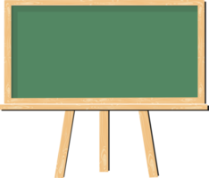

What is Tasky?
Tasky is a task management website, that helps you manage your work all in one space!

Create Boards
You can create a board for whatever subject you want! these boards will contain all of your tasks and you can even divide them into lists!
How it works?
Step 1: Create a Board
You can create your own board within the "My Boards" Page.
Step 2: Add a List
Each Board containes 1 or more lists, you can create a list and give it a name aswell.
Step 3: Add a Task
These tasks are what drives you, you can also move them between lists.